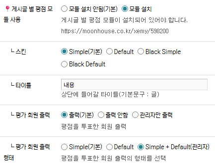
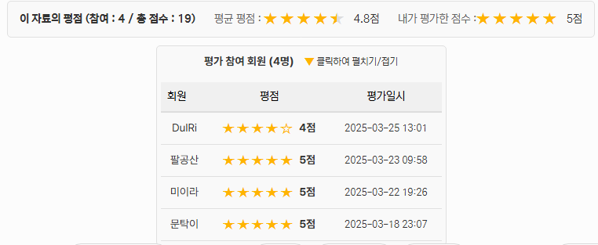
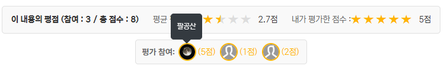
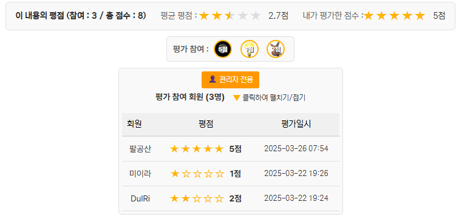

별점 기능을 사용할 게시판 스킨에 아래의 코드를 작성합니다.
sketchbook5(스케치북5) 스킨을 예제로 삼습니다. ./modules/board/skins/sketchbook5
1. 모듈 지정 설정
skin.xml 에 추가
<var name="star_point" type="radio">
<title>게시글 별 평점 모듈 사용</title>
<description>게시글 별 평점 모듈이 설치되어 있어야 합니다.
https://moonhouse.co.kr/xemy/598200</description>
<options value="">
<title>모듈 설치 안됨(기본)</title>
</options>
<options value="Y">
<title>모듈 설치</title>
</options>
</var>
<var name="starpoint_skin" type="radio">
<title> ┖ 스킨</title>
<description/>
<options value="">
<title>Simple(기본)</title>
</options>
<options value="d">
<title>Default</title>
</options>
<options value="b_s">
<title>Black Simple</title>
</options>
<options value="b_d">
<title>Black Default</title>
</options>
</var>
<var name="starpoint_text" type="text">
<title> ┖ 타이틀</title>
<description>상단에 들어갈 타이틀(기본문구 : 글)</description>
</var>
<var name="vote_members" type="radio">
<title> ┖ 평가 회원 출력</title>
<description>평점을 투표한 회원 출력</description>
<options value="">
<title>출력(기본)</title>
</options>
<options value="N">
<title>출력 안함</title>
</options>
<options value="A">
<title>관리자만 출력</title>
</options>
</var>
<var name="vm_form" type="radio">
<title> ┖ 평가 회원 출력 형태</title>
<description>평점을 투표한 회원 출력의 형태를 선택</description>
<options value="">
<title>Simple(기본)</title>
</options>
<options value="D">
<title>Default</title>
</options>
<options value="T">
<title>Simple + Default(관리자)</title>
</options>
</var>
2. 게시판 스킨의 본문글 하단에 모듈 스킨 설정
_read.html 에 추가
<!--// 글 별평점 모듈 -->
<include cond="!$mi->star_point =='' && $mi->starpoint_skin ==''" target="/modules/starpoint/skins/simple/rating.html" />
<include cond="!$mi->star_point =='' && $mi->starpoint_skin =='d'" target="/modules/starpoint/skins/default/rating.html" />
<include cond="!$mi->star_point =='' && $mi->starpoint_skin =='b_s'" target="/modules/starpoint/skins/black_simple/rating.html" />
<include cond="!$mi->star_point =='' && $mi->starpoint_skin =='b_d'" target="/modules/starpoint/skins/black_default/rating.html" />
<!-- 평가 회원 출력 -->
<include cond="!$mi->star_point =='' && $mi->vote_members ==''" target="vote_members.html" />
<include cond="!$mi->star_point =='' && $mi->vote_members =='A' && $logged_info->is_admin == 'Y'" target="vote_members.html" />
3. 게시판 스킨에 새로 생성된 vote_members.html 파일 추가
1. 모듈 스킨 - Simple, Default, black_simple, black_default
2. 평가 회원 출력 - 출력(기본), 출력 안함, 관리자만 출력
3. 평가 회원 출력 형태 - Simple, Default, Simple + Default(관리자)
[Default]
[Simple - 평점은 관리자만 보임]
[Simple + Default(관리자) - Simple은 모두에게 출력 Default형은 관리자만 출력]
